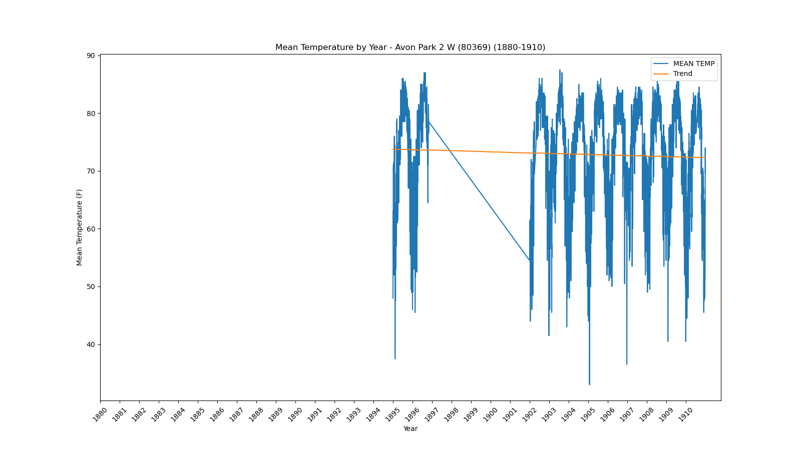
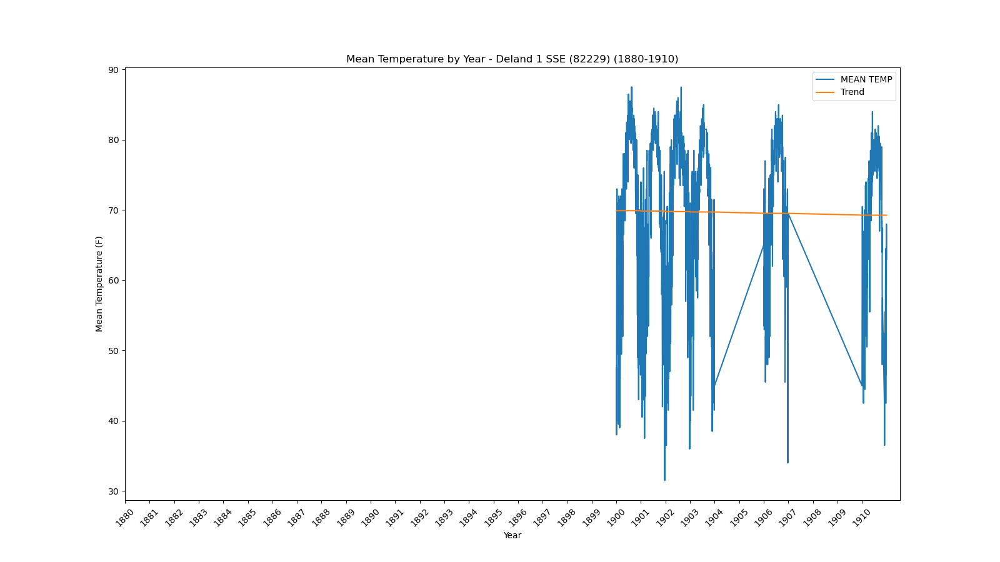
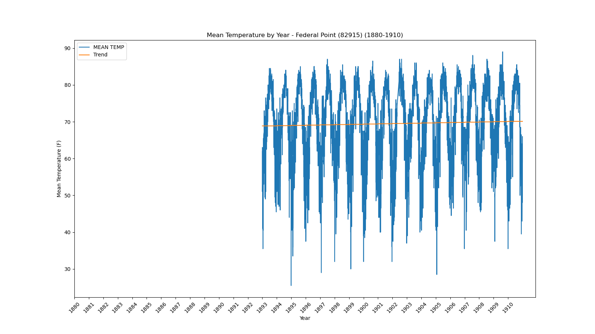
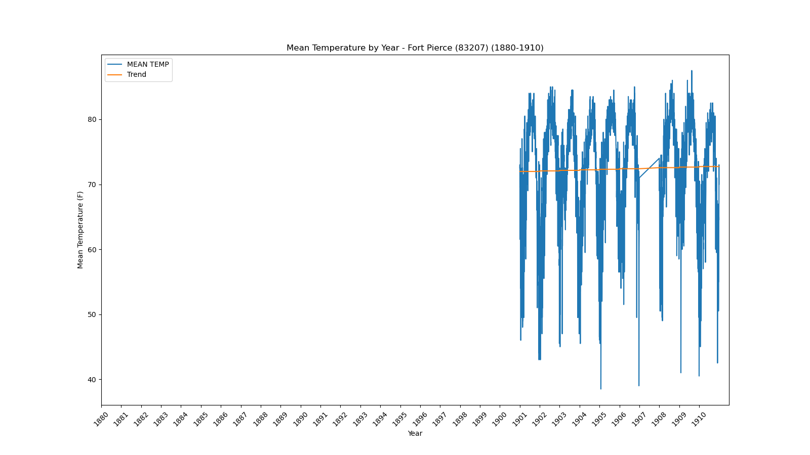
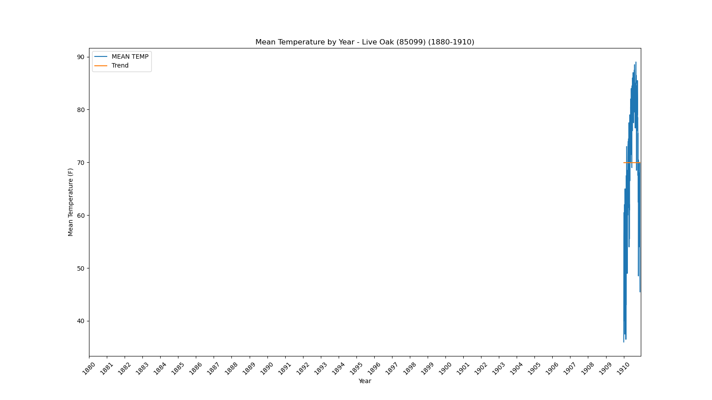

<!DOCTYPE html>
<html>
<head>
    
    <meta http-equiv="content-type" content="text/html; charset=UTF-8" />
    
        <script>
            L_NO_TOUCH = false;
            L_DISABLE_3D = false;
        </script>
    
    <style>html, body {width: 100%;height: 100%;margin: 0;padding: 0;}</style>
    <style>#map {position:absolute;top:0;bottom:0;right:0;left:0;}</style>
    <script src="https://cdn.jsdelivr.net/npm/leaflet@1.9.3/dist/leaflet.js"></script>
    <script src="https://code.jquery.com/jquery-1.12.4.min.js"></script>
    <script src="https://cdn.jsdelivr.net/npm/bootstrap@5.2.2/dist/js/bootstrap.bundle.min.js"></script>
    <script src="https://cdnjs.cloudflare.com/ajax/libs/Leaflet.awesome-markers/2.0.2/leaflet.awesome-markers.js"></script>
    <link rel="stylesheet" href="https://cdn.jsdelivr.net/npm/leaflet@1.9.3/dist/leaflet.css"/>
    <link rel="stylesheet" href="https://cdn.jsdelivr.net/npm/bootstrap@5.2.2/dist/css/bootstrap.min.css"/>
    <link rel="stylesheet" href="https://netdna.bootstrapcdn.com/bootstrap/3.0.0/css/bootstrap.min.css"/>
    <link rel="stylesheet" href="https://cdn.jsdelivr.net/npm/@fortawesome/fontawesome-free@6.2.0/css/all.min.css"/>
    <link rel="stylesheet" href="https://cdnjs.cloudflare.com/ajax/libs/Leaflet.awesome-markers/2.0.2/leaflet.awesome-markers.css"/>
    <link rel="stylesheet" href="https://cdn.jsdelivr.net/gh/python-visualization/folium/folium/templates/leaflet.awesome.rotate.min.css"/>
    
            <meta name="viewport" content="width=device-width,
                initial-scale=1.0, maximum-scale=1.0, user-scalable=no" />
            <style>
                #map_0369e074d35453d20a28d0cdcc5b9c94 {
                    position: relative;
                    width: 100.0%;
                    height: 100.0%;
                    left: 0.0%;
                    top: 0.0%;
                }
                .leaflet-container { font-size: 1rem; }
            </style>
        
</head>
<body>
    
    
            <div class="folium-map" id="map_0369e074d35453d20a28d0cdcc5b9c94" ></div>
        
</body>
<script>
    
    
            var map_0369e074d35453d20a28d0cdcc5b9c94 = L.map(
                "map_0369e074d35453d20a28d0cdcc5b9c94",
                {
                    center: [28.0, -82.5],
                    crs: L.CRS.EPSG3857,
                    zoom: 7,
                    zoomControl: false,
                    preferCanvas: false,
                }
            );

            

        
    
            var tile_layer_a08a723fb5ed779f719b779dea51da09 = L.tileLayer(
                "https://cartodb-basemaps-{s}.global.ssl.fastly.net/dark_all/{z}/{x}/{y}.png",
                {"attribution": "\u0026copy; \u003ca target=\"_blank\" href=\"http://www.openstreetmap.org/copyright\"\u003eOpenStreetMap\u003c/a\u003e contributors \u0026copy; \u003ca target=\"_blank\" href=\"http://cartodb.com/attributions\"\u003eCartoDB\u003c/a\u003e, CartoDB \u003ca target=\"_blank\" href =\"http://cartodb.com/attributions\"\u003eattributions\u003c/a\u003e", "detectRetina": false, "maxNativeZoom": 18, "maxZoom": 18, "minZoom": 7, "noWrap": false, "opacity": 1, "subdomains": "abc", "tms": false}
            ).addTo(map_0369e074d35453d20a28d0cdcc5b9c94);
        
    
            var marker_927ecdfad4b3054f4842a9641a9ce475 = L.marker(
                [27.22, -81.86],
                {}
            ).addTo(map_0369e074d35453d20a28d0cdcc5b9c94);
        
    
            var icon_344a3a1c3ddfcc9b2ff661226a0b6099 = L.AwesomeMarkers.icon(
                {"extraClasses": "fa-rotate-0", "icon": "info-sign", "iconColor": "white", "markerColor": "blue", "prefix": "glyphicon"}
            );
            marker_927ecdfad4b3054f4842a9641a9ce475.setIcon(icon_344a3a1c3ddfcc9b2ff661226a0b6099);
        
    
        var popup_e08ee71ca47d680d8498176619005952 = L.popup({"maxWidth": 1000, "minWidth": 500});

        
            
                var html_6f1573f1527d033dd56cbea696db2231 = $(`<div id="html_6f1573f1527d033dd56cbea696db2231" style="width: 100.0%; height: 100.0%;"><b>Arcadia (80228)</b><br>lat: 27.22, lon: -81.86<br><a href='../../static/img/plots/timeseries/meantemp_daily/80228_1880-1910.png' target='_BLANK'></a></div>`)[0];
                popup_e08ee71ca47d680d8498176619005952.setContent(html_6f1573f1527d033dd56cbea696db2231);
            
        

        marker_927ecdfad4b3054f4842a9641a9ce475.bindPopup(popup_e08ee71ca47d680d8498176619005952)
        ;

        
    
    
            var marker_651b31b402baa9b29ab2f95fbad1bcb3 = L.marker(
                [27.59, -81.53],
                {}
            ).addTo(map_0369e074d35453d20a28d0cdcc5b9c94);
        
    
            var icon_b60a1d73d64f8c49b5d4539a423bc34b = L.AwesomeMarkers.icon(
                {"extraClasses": "fa-rotate-0", "icon": "info-sign", "iconColor": "white", "markerColor": "blue", "prefix": "glyphicon"}
            );
            marker_651b31b402baa9b29ab2f95fbad1bcb3.setIcon(icon_b60a1d73d64f8c49b5d4539a423bc34b);
        
    
        var popup_64ee28efdf08b0a71028793d31b85119 = L.popup({"maxWidth": 1000, "minWidth": 500});

        
            
                var html_569d9525d9e8fcb9ef8d68f491f1b236 = $(`<div id="html_569d9525d9e8fcb9ef8d68f491f1b236" style="width: 100.0%; height: 100.0%;"><b>Avon Park 2 W (80369)</b><br>lat: 27.59, lon: -81.53<br><a href='../../static/img/plots/timeseries/meantemp_daily/80369_1880-1910.png' target='_BLANK'></a></div>`)[0];
                popup_64ee28efdf08b0a71028793d31b85119.setContent(html_569d9525d9e8fcb9ef8d68f491f1b236);
            
        

        marker_651b31b402baa9b29ab2f95fbad1bcb3.bindPopup(popup_64ee28efdf08b0a71028793d31b85119)
        ;

        
    
    
            var marker_f24f37d2c4558c47955493bcf0048976 = L.marker(
                [27.95, -81.79],
                {}
            ).addTo(map_0369e074d35453d20a28d0cdcc5b9c94);
        
    
            var icon_2e9b951a84ef1311deba4c3c252b81ad = L.AwesomeMarkers.icon(
                {"extraClasses": "fa-rotate-0", "icon": "info-sign", "iconColor": "white", "markerColor": "orange", "prefix": "glyphicon"}
            );
            marker_f24f37d2c4558c47955493bcf0048976.setIcon(icon_2e9b951a84ef1311deba4c3c252b81ad);
        
    
        var popup_3336c6326304a7dd611db059421a9b12 = L.popup({"maxWidth": 1000, "minWidth": 500});

        
            
                var html_a79910082e0f06f901db767c01bdda4b = $(`<div id="html_a79910082e0f06f901db767c01bdda4b" style="width: 100.0%; height: 100.0%;"><b>Bartow (80478)</b><br>lat: 27.95, lon: -81.79<br><a href='../../static/img/plots/timeseries/meantemp_daily/80478_1880-1910.png' target='_BLANK'></a></div>`)[0];
                popup_3336c6326304a7dd611db059421a9b12.setContent(html_a79910082e0f06f901db767c01bdda4b);
            
        

        marker_f24f37d2c4558c47955493bcf0048976.bindPopup(popup_3336c6326304a7dd611db059421a9b12)
        ;

        
    
    
            var marker_f6acc483c41b48288cfbea508b5b9d1a = L.marker(
                [28.62, -82.37],
                {}
            ).addTo(map_0369e074d35453d20a28d0cdcc5b9c94);
        
    
            var icon_9cc9f2cc1935e2c1db7caf21eada4a63 = L.AwesomeMarkers.icon(
                {"extraClasses": "fa-rotate-0", "icon": "info-sign", "iconColor": "white", "markerColor": "orange", "prefix": "glyphicon"}
            );
            marker_f6acc483c41b48288cfbea508b5b9d1a.setIcon(icon_9cc9f2cc1935e2c1db7caf21eada4a63);
        
    
        var popup_e7ecc380a7ac697235541bf4b1012b78 = L.popup({"maxWidth": 1000, "minWidth": 500});

        
            
                var html_e55594d2fa6998eab3481bfd4ea57fe5 = $(`<div id="html_e55594d2fa6998eab3481bfd4ea57fe5" style="width: 100.0%; height: 100.0%;"><b>Chinsegut Hill (81046)</b><br>lat: 28.62, lon: -82.37<br><a href='../../static/img/plots/timeseries/meantemp_daily/81046_1880-1910.png' target='_BLANK'></a></div>`)[0];
                popup_e7ecc380a7ac697235541bf4b1012b78.setContent(html_e55594d2fa6998eab3481bfd4ea57fe5);
            
        

        marker_f6acc483c41b48288cfbea508b5b9d1a.bindPopup(popup_e7ecc380a7ac697235541bf4b1012b78)
        ;

        
    
    
            var marker_42b6261b25362c514b38b770d90a05b7 = L.marker(
                [30.72, -86.12],
                {}
            ).addTo(map_0369e074d35453d20a28d0cdcc5b9c94);
        
    
            var icon_42834b289201e01e7265779402c8be3f = L.AwesomeMarkers.icon(
                {"extraClasses": "fa-rotate-0", "icon": "info-sign", "iconColor": "white", "markerColor": "orange", "prefix": "glyphicon"}
            );
            marker_42b6261b25362c514b38b770d90a05b7.setIcon(icon_42834b289201e01e7265779402c8be3f);
        
    
        var popup_d25087f1f15bb9c319282e3f3bef3537 = L.popup({"maxWidth": 1000, "minWidth": 500});

        
            
                var html_1a15fc8c8e5e6130d29716d009280c1f = $(`<div id="html_1a15fc8c8e5e6130d29716d009280c1f" style="width: 100.0%; height: 100.0%;"><b>De Funiak Springs 1 E (82220)</b><br>lat: 30.72, lon: -86.12<br><a href='../../static/img/plots/timeseries/meantemp_daily/82220_1880-1910.png' target='_BLANK'></a></div>`)[0];
                popup_d25087f1f15bb9c319282e3f3bef3537.setContent(html_1a15fc8c8e5e6130d29716d009280c1f);
            
        

        marker_42b6261b25362c514b38b770d90a05b7.bindPopup(popup_d25087f1f15bb9c319282e3f3bef3537)
        ;

        
    
    
            var marker_cdfde0bbb42b7ece2e1b871065daa9d1 = L.marker(
                [29.03, -81.3],
                {}
            ).addTo(map_0369e074d35453d20a28d0cdcc5b9c94);
        
    
            var icon_2e2d353827734eb2d2343b2598d41304 = L.AwesomeMarkers.icon(
                {"extraClasses": "fa-rotate-0", "icon": "info-sign", "iconColor": "white", "markerColor": "blue", "prefix": "glyphicon"}
            );
            marker_cdfde0bbb42b7ece2e1b871065daa9d1.setIcon(icon_2e2d353827734eb2d2343b2598d41304);
        
    
        var popup_7dc849f033548254d57317cdb2e9a65c = L.popup({"maxWidth": 1000, "minWidth": 500});

        
            
                var html_c7ea13a992f95f7fb9c4252d689d5fa4 = $(`<div id="html_c7ea13a992f95f7fb9c4252d689d5fa4" style="width: 100.0%; height: 100.0%;"><b>Deland 1 SSE (82229)</b><br>lat: 29.03, lon: -81.3<br><a href='../../static/img/plots/timeseries/meantemp_daily/82229_1880-1910.png' target='_BLANK'></a></div>`)[0];
                popup_7dc849f033548254d57317cdb2e9a65c.setContent(html_c7ea13a992f95f7fb9c4252d689d5fa4);
            
        

        marker_cdfde0bbb42b7ece2e1b871065daa9d1.bindPopup(popup_7dc849f033548254d57317cdb2e9a65c)
        ;

        
    
    
            var marker_f4f85a7a39d933da46b64074fbd22bb8 = L.marker(
                [29.75, -81.54],
                {}
            ).addTo(map_0369e074d35453d20a28d0cdcc5b9c94);
        
    
            var icon_df5079ccf346e37a636f37f405690312 = L.AwesomeMarkers.icon(
                {"extraClasses": "fa-rotate-0", "icon": "info-sign", "iconColor": "white", "markerColor": "orange", "prefix": "glyphicon"}
            );
            marker_f4f85a7a39d933da46b64074fbd22bb8.setIcon(icon_df5079ccf346e37a636f37f405690312);
        
    
        var popup_8d7f1b8d88b655012590e18c25ee9e11 = L.popup({"maxWidth": 1000, "minWidth": 500});

        
            
                var html_c81a67b01032e1fd42b8b5030390af0e = $(`<div id="html_c81a67b01032e1fd42b8b5030390af0e" style="width: 100.0%; height: 100.0%;"><b>Federal Point (82915)</b><br>lat: 29.75, lon: -81.54<br><a href='../../static/img/plots/timeseries/meantemp_daily/82915_1880-1910.png' target='_BLANK'></a></div>`)[0];
                popup_8d7f1b8d88b655012590e18c25ee9e11.setContent(html_c81a67b01032e1fd42b8b5030390af0e);
            
        

        marker_f4f85a7a39d933da46b64074fbd22bb8.bindPopup(popup_8d7f1b8d88b655012590e18c25ee9e11)
        ;

        
    
    
            var marker_fc6c645e7ad192269a609aee9e06f4ac = L.marker(
                [30.62, -81.46],
                {}
            ).addTo(map_0369e074d35453d20a28d0cdcc5b9c94);
        
    
            var icon_a6fdc4eeb0353f8a096d91f309db931c = L.AwesomeMarkers.icon(
                {"extraClasses": "fa-rotate-0", "icon": "info-sign", "iconColor": "white", "markerColor": "orange", "prefix": "glyphicon"}
            );
            marker_fc6c645e7ad192269a609aee9e06f4ac.setIcon(icon_a6fdc4eeb0353f8a096d91f309db931c);
        
    
        var popup_4d3e0cdf1f84b5badf3a000f651fb561 = L.popup({"maxWidth": 1000, "minWidth": 500});

        
            
                var html_eac0e202349d172df8ee8056ec1b1b99 = $(`<div id="html_eac0e202349d172df8ee8056ec1b1b99" style="width: 100.0%; height: 100.0%;"><b>Fernandina Beach (82944)</b><br>lat: 30.62, lon: -81.46<br><a href='../../static/img/plots/timeseries/meantemp_daily/82944_1880-1910.png' target='_BLANK'></a></div>`)[0];
                popup_4d3e0cdf1f84b5badf3a000f651fb561.setContent(html_eac0e202349d172df8ee8056ec1b1b99);
            
        

        marker_fc6c645e7ad192269a609aee9e06f4ac.bindPopup(popup_4d3e0cdf1f84b5badf3a000f651fb561)
        ;

        
    
    
            var marker_570858bd1379b1ec6441b13d266414fa = L.marker(
                [26.59, -81.87],
                {}
            ).addTo(map_0369e074d35453d20a28d0cdcc5b9c94);
        
    
            var icon_07b1977f38ac64f602df3a694a5fc7b6 = L.AwesomeMarkers.icon(
                {"extraClasses": "fa-rotate-0", "icon": "info-sign", "iconColor": "white", "markerColor": "blue", "prefix": "glyphicon"}
            );
            marker_570858bd1379b1ec6441b13d266414fa.setIcon(icon_07b1977f38ac64f602df3a694a5fc7b6);
        
    
        var popup_4ca61057f18909d9aac646ba28ea1625 = L.popup({"maxWidth": 1000, "minWidth": 500});

        
            
                var html_6ad1181f97a6851be2b2a3da804a445d = $(`<div id="html_6ad1181f97a6851be2b2a3da804a445d" style="width: 100.0%; height: 100.0%;"><b>Fort Myers Page Field Airport (83186)</b><br>lat: 26.59, lon: -81.87<br><a href='../../static/img/plots/timeseries/meantemp_daily/83186_1880-1910.png' target='_BLANK'></a></div>`)[0];
                popup_4ca61057f18909d9aac646ba28ea1625.setContent(html_6ad1181f97a6851be2b2a3da804a445d);
            
        

        marker_570858bd1379b1ec6441b13d266414fa.bindPopup(popup_4ca61057f18909d9aac646ba28ea1625)
        ;

        
    
    
            var marker_a7d4e11f29d5aa224d3adcf907d0a275 = L.marker(
                [27.44, -80.34],
                {}
            ).addTo(map_0369e074d35453d20a28d0cdcc5b9c94);
        
    
            var icon_74779c5b3a7f8ed79a74cb7b05d97b8f = L.AwesomeMarkers.icon(
                {"extraClasses": "fa-rotate-0", "icon": "info-sign", "iconColor": "white", "markerColor": "orange", "prefix": "glyphicon"}
            );
            marker_a7d4e11f29d5aa224d3adcf907d0a275.setIcon(icon_74779c5b3a7f8ed79a74cb7b05d97b8f);
        
    
        var popup_a48136a45c7e392b3c721174bf3016ce = L.popup({"maxWidth": 1000, "minWidth": 500});

        
            
                var html_d2fddf9168fafbfce6a482ee6e573421 = $(`<div id="html_d2fddf9168fafbfce6a482ee6e573421" style="width: 100.0%; height: 100.0%;"><b>Fort Pierce (83207)</b><br>lat: 27.44, lon: -80.34<br><a href='../../static/img/plots/timeseries/meantemp_daily/83207_1880-1910.png' target='_BLANK'></a></div>`)[0];
                popup_a48136a45c7e392b3c721174bf3016ce.setContent(html_d2fddf9168fafbfce6a482ee6e573421);
            
        

        marker_a7d4e11f29d5aa224d3adcf907d0a275.bindPopup(popup_a48136a45c7e392b3c721174bf3016ce)
        ;

        
    
    
            var marker_a75369fcdcfc32572eb58effcfc91070 = L.marker(
                [28.84, -82.34],
                {}
            ).addTo(map_0369e074d35453d20a28d0cdcc5b9c94);
        
    
            var icon_64892ca8f886b4a44f01766fc51d5ce2 = L.AwesomeMarkers.icon(
                {"extraClasses": "fa-rotate-0", "icon": "info-sign", "iconColor": "white", "markerColor": "blue", "prefix": "glyphicon"}
            );
            marker_a75369fcdcfc32572eb58effcfc91070.setIcon(icon_64892ca8f886b4a44f01766fc51d5ce2);
        
    
        var popup_5240d70cb2c3083ea3b7f4d7dcc90b5e = L.popup({"maxWidth": 1000, "minWidth": 500});

        
            
                var html_0c0c606dd2fe49a4669bdfe629f61608 = $(`<div id="html_0c0c606dd2fe49a4669bdfe629f61608" style="width: 100.0%; height: 100.0%;"><b>Iverness 3 SE (84289)</b><br>lat: 28.84, lon: -82.34<br><a href='../../static/img/plots/timeseries/meantemp_daily/84289_1880-1910.png' target='_BLANK'></a></div>`)[0];
                popup_5240d70cb2c3083ea3b7f4d7dcc90b5e.setContent(html_0c0c606dd2fe49a4669bdfe629f61608);
            
        

        marker_a75369fcdcfc32572eb58effcfc91070.bindPopup(popup_5240d70cb2c3083ea3b7f4d7dcc90b5e)
        ;

        
    
    
            var marker_d0a57d599b58dddffe6e3b2f3f9367bf = L.marker(
                [30.12, -82.64],
                {}
            ).addTo(map_0369e074d35453d20a28d0cdcc5b9c94);
        
    
            var icon_7c9992d294728e7eb7aaef1051afbfbf = L.AwesomeMarkers.icon(
                {"extraClasses": "fa-rotate-0", "icon": "info-sign", "iconColor": "white", "markerColor": "blue", "prefix": "glyphicon"}
            );
            marker_d0a57d599b58dddffe6e3b2f3f9367bf.setIcon(icon_7c9992d294728e7eb7aaef1051afbfbf);
        
    
        var popup_d4c96e41ee13b65bee833f1988bb6324 = L.popup({"maxWidth": 1000, "minWidth": 500});

        
            
                var html_79e9b20ede1d3167c6cd9fc5c34e2527 = $(`<div id="html_79e9b20ede1d3167c6cd9fc5c34e2527" style="width: 100.0%; height: 100.0%;"><b>Lake City 2 E (84731)</b><br>lat: 30.12, lon: -82.64<br><a href='../../static/img/plots/timeseries/meantemp_daily/84731_1880-1910.png' target='_BLANK'></a></div>`)[0];
                popup_d4c96e41ee13b65bee833f1988bb6324.setContent(html_79e9b20ede1d3167c6cd9fc5c34e2527);
            
        

        marker_d0a57d599b58dddffe6e3b2f3f9367bf.bindPopup(popup_d4c96e41ee13b65bee833f1988bb6324)
        ;

        
    
    
            var marker_92603242869d9eb35b4fa04bc34e29b8 = L.marker(
                [30.29, -82.99],
                {}
            ).addTo(map_0369e074d35453d20a28d0cdcc5b9c94);
        
    
            var icon_4a60711314e57179b958ff140a3ee164 = L.AwesomeMarkers.icon(
                {"extraClasses": "fa-rotate-0", "icon": "info-sign", "iconColor": "white", "markerColor": "orange", "prefix": "glyphicon"}
            );
            marker_92603242869d9eb35b4fa04bc34e29b8.setIcon(icon_4a60711314e57179b958ff140a3ee164);
        
    
        var popup_6c124316a9d380c9b2785a5733abb66c = L.popup({"maxWidth": 1000, "minWidth": 500});

        
            
                var html_43ec563d2be47673eb1b117d9811f259 = $(`<div id="html_43ec563d2be47673eb1b117d9811f259" style="width: 100.0%; height: 100.0%;"><b>Live Oak (85099)</b><br>lat: 30.29, lon: -82.99<br><a href='../../static/img/plots/timeseries/meantemp_daily/85099_1880-1910.png' target='_BLANK'></a></div>`)[0];
                popup_6c124316a9d380c9b2785a5733abb66c.setContent(html_43ec563d2be47673eb1b117d9811f259);
            
        

        marker_92603242869d9eb35b4fa04bc34e29b8.bindPopup(popup_6c124316a9d380c9b2785a5733abb66c)
        ;

        
    
    
            var marker_ed7aee425b91fdb01a57baea9b35b71d = L.marker(
                [30.48, -83.24],
                {}
            ).addTo(map_0369e074d35453d20a28d0cdcc5b9c94);
        
    
            var icon_06e5594c49b197d295effb613a7733fb = L.AwesomeMarkers.icon(
                {"extraClasses": "fa-rotate-0", "icon": "info-sign", "iconColor": "white", "markerColor": "orange", "prefix": "glyphicon"}
            );
            marker_ed7aee425b91fdb01a57baea9b35b71d.setIcon(icon_06e5594c49b197d295effb613a7733fb);
        
    
        var popup_7de07bc08ac7047a2a694cbbc5a10592 = L.popup({"maxWidth": 1000, "minWidth": 500});

        
            
                var html_f022015805e6c510bffa0132442501e4 = $(`<div id="html_f022015805e6c510bffa0132442501e4" style="width: 100.0%; height: 100.0%;"><b>Madison (85275)</b><br>lat: 30.48, lon: -83.24<br><a href='../../static/img/plots/timeseries/meantemp_daily/85275_1880-1910.png' target='_BLANK'></a></div>`)[0];
                popup_7de07bc08ac7047a2a694cbbc5a10592.setContent(html_f022015805e6c510bffa0132442501e4);
            
        

        marker_ed7aee425b91fdb01a57baea9b35b71d.bindPopup(popup_7de07bc08ac7047a2a694cbbc5a10592)
        ;

        
    
    
            var marker_7e806ca5aa2cf6264eb9c9b6f306b4c0 = L.marker(
                [30.29, -83.46],
                {}
            ).addTo(map_0369e074d35453d20a28d0cdcc5b9c94);
        
    
            var icon_daf73f41190c01adffc08e5a525cf5b3 = L.AwesomeMarkers.icon(
                {"extraClasses": "fa-rotate-0", "icon": "info-sign", "iconColor": "white", "markerColor": "orange", "prefix": "glyphicon"}
            );
            marker_7e806ca5aa2cf6264eb9c9b6f306b4c0.setIcon(icon_daf73f41190c01adffc08e5a525cf5b3);
        
    
        var popup_31c56a507746c720d5775f72607d3005 = L.popup({"maxWidth": 1000, "minWidth": 500});

        
            
                var html_33ff9cc275583533fb88f8d488b90078 = $(`<div id="html_33ff9cc275583533fb88f8d488b90078" style="width: 100.0%; height: 100.0%;"><b>Monticello 5 SE (85879)</b><br>lat: 30.29, lon: -83.46<br><a href='../../static/img/plots/timeseries/meantemp_daily/85879_1880-1910.png' target='_BLANK'></a></div>`)[0];
                popup_31c56a507746c720d5775f72607d3005.setContent(html_33ff9cc275583533fb88f8d488b90078);
            
        

        marker_7e806ca5aa2cf6264eb9c9b6f306b4c0.bindPopup(popup_31c56a507746c720d5775f72607d3005)
        ;

        
    
    
            var marker_fb52a05a9219fa7e364b9720eb680f87 = L.marker(
                [29.19, -82.14],
                {}
            ).addTo(map_0369e074d35453d20a28d0cdcc5b9c94);
        
    
            var icon_bddd4dcf8f3de9add739542f0ad0de71 = L.AwesomeMarkers.icon(
                {"extraClasses": "fa-rotate-0", "icon": "info-sign", "iconColor": "white", "markerColor": "blue", "prefix": "glyphicon"}
            );
            marker_fb52a05a9219fa7e364b9720eb680f87.setIcon(icon_bddd4dcf8f3de9add739542f0ad0de71);
        
    
        var popup_c0239c6874f8c9f50ad152d43c9ce5f5 = L.popup({"maxWidth": 1000, "minWidth": 500});

        
            
                var html_84a3d65f0d7a401b1e1cf37eef86da71 = $(`<div id="html_84a3d65f0d7a401b1e1cf37eef86da71" style="width: 100.0%; height: 100.0%;"><b>Ocala (86414)</b><br>lat: 29.19, lon: -82.14<br><a href='../../static/img/plots/timeseries/meantemp_daily/86414_1880-1910.png' target='_BLANK'></a></div>`)[0];
                popup_c0239c6874f8c9f50ad152d43c9ce5f5.setContent(html_84a3d65f0d7a401b1e1cf37eef86da71);
            
        

        marker_fb52a05a9219fa7e364b9720eb680f87.bindPopup(popup_c0239c6874f8c9f50ad152d43c9ce5f5)
        ;

        
    
    
            var marker_b643bd6da2694796cb614b657dd27454 = L.marker(
                [28.01, -82.16],
                {}
            ).addTo(map_0369e074d35453d20a28d0cdcc5b9c94);
        
    
            var icon_7b39aaa8f00c427ad22a9db30937a129 = L.AwesomeMarkers.icon(
                {"extraClasses": "fa-rotate-0", "icon": "info-sign", "iconColor": "white", "markerColor": "blue", "prefix": "glyphicon"}
            );
            marker_b643bd6da2694796cb614b657dd27454.setIcon(icon_7b39aaa8f00c427ad22a9db30937a129);
        
    
        var popup_57f6262b1371247633a05f45bfecba42 = L.popup({"maxWidth": 1000, "minWidth": 500});

        
            
                var html_b52c0ca280c1996366ec924e5cb20834 = $(`<div id="html_b52c0ca280c1996366ec924e5cb20834" style="width: 100.0%; height: 100.0%;"><b>Plant City (87205)</b><br>lat: 28.01, lon: -82.16<br><a href='../../static/img/plots/timeseries/meantemp_daily/87205_1880-1910.png' target='_BLANK'></a></div>`)[0];
                popup_57f6262b1371247633a05f45bfecba42.setContent(html_b52c0ca280c1996366ec924e5cb20834);
            
        

        marker_b643bd6da2694796cb614b657dd27454.bindPopup(popup_57f6262b1371247633a05f45bfecba42)
        ;

        
    
    
            var marker_9712809a88352c15c3c7cbcf65ab2e0a = L.marker(
                [28.34, -82.26],
                {}
            ).addTo(map_0369e074d35453d20a28d0cdcc5b9c94);
        
    
            var icon_2ff50ef437d7c8f85cac55939b3f0514 = L.AwesomeMarkers.icon(
                {"extraClasses": "fa-rotate-0", "icon": "info-sign", "iconColor": "white", "markerColor": "blue", "prefix": "glyphicon"}
            );
            marker_9712809a88352c15c3c7cbcf65ab2e0a.setIcon(icon_2ff50ef437d7c8f85cac55939b3f0514);
        
    
        var popup_c5c3d991683fce15658052f27680535c = L.popup({"maxWidth": 1000, "minWidth": 500});

        
            
                var html_5d49ad04496fab833941c9983399d308 = $(`<div id="html_5d49ad04496fab833941c9983399d308" style="width: 100.0%; height: 100.0%;"><b>Sain Leo (87851)</b><br>lat: 28.34, lon: -82.26<br><a href='../../static/img/plots/timeseries/meantemp_daily/87851_1880-1910.png' target='_BLANK'></a></div>`)[0];
                popup_c5c3d991683fce15658052f27680535c.setContent(html_5d49ad04496fab833941c9983399d308);
            
        

        marker_9712809a88352c15c3c7cbcf65ab2e0a.bindPopup(popup_c5c3d991683fce15658052f27680535c)
        ;

        
    
    
            var marker_e91e9078dc26452717136f209bba11ae = L.marker(
                [27.91, -82.69],
                {}
            ).addTo(map_0369e074d35453d20a28d0cdcc5b9c94);
        
    
            var icon_f89d3b0cd2c6e47ae64e41ec40b64f31 = L.AwesomeMarkers.icon(
                {"extraClasses": "fa-rotate-0", "icon": "info-sign", "iconColor": "white", "markerColor": "orange", "prefix": "glyphicon"}
            );
            marker_e91e9078dc26452717136f209bba11ae.setIcon(icon_f89d3b0cd2c6e47ae64e41ec40b64f31);
        
    
        var popup_0f5a1b673b4169ba2786f8f58c3a3a72 = L.popup({"maxWidth": 1000, "minWidth": 500});

        
            
                var html_4ee73d3fd5af2f1d06f7591b0735525b = $(`<div id="html_4ee73d3fd5af2f1d06f7591b0735525b" style="width: 100.0%; height: 100.0%;"><b>St. Petersburg Airport (87886)</b><br>lat: 27.91, lon: -82.69<br><a href='../../static/img/plots/timeseries/meantemp_daily/87886_1880-1910.png' target='_BLANK'></a></div>`)[0];
                popup_0f5a1b673b4169ba2786f8f58c3a3a72.setContent(html_4ee73d3fd5af2f1d06f7591b0735525b);
            
        

        marker_e91e9078dc26452717136f209bba11ae.bindPopup(popup_0f5a1b673b4169ba2786f8f58c3a3a72)
        ;

        
    
    
            var marker_5282bbe2d2ee8bd909d08345a68d6d3f = L.marker(
                [28.15, -82.75],
                {}
            ).addTo(map_0369e074d35453d20a28d0cdcc5b9c94);
        
    
            var icon_260d0108f3cbb2ed15777d74e66ca94a = L.AwesomeMarkers.icon(
                {"extraClasses": "fa-rotate-0", "icon": "info-sign", "iconColor": "white", "markerColor": "orange", "prefix": "glyphicon"}
            );
            marker_5282bbe2d2ee8bd909d08345a68d6d3f.setIcon(icon_260d0108f3cbb2ed15777d74e66ca94a);
        
    
        var popup_ae3e373d0935ec04a60315e7ba152e88 = L.popup({"maxWidth": 1000, "minWidth": 500});

        
            
                var html_2e5845d88d5ee01459d158a1d01175d2 = $(`<div id="html_2e5845d88d5ee01459d158a1d01175d2" style="width: 100.0%; height: 100.0%;"><b>Tarpon Springs Sewage Plant (88824)</b><br>lat: 28.15, lon: -82.75<br><a href='../../static/img/plots/timeseries/meantemp_daily/88824_1880-1910.png' target='_BLANK'></a></div>`)[0];
                popup_ae3e373d0935ec04a60315e7ba152e88.setContent(html_2e5845d88d5ee01459d158a1d01175d2);
            
        

        marker_5282bbe2d2ee8bd909d08345a68d6d3f.bindPopup(popup_ae3e373d0935ec04a60315e7ba152e88)
        ;

        
    
    
            var marker_e920a37dbce131611e92756175cfd892 = L.marker(
                [28.61, -80.82],
                {}
            ).addTo(map_0369e074d35453d20a28d0cdcc5b9c94);
        
    
            var icon_c594ca4f3d93a3be814299b1b7dce5e2 = L.AwesomeMarkers.icon(
                {"extraClasses": "fa-rotate-0", "icon": "info-sign", "iconColor": "white", "markerColor": "orange", "prefix": "glyphicon"}
            );
            marker_e920a37dbce131611e92756175cfd892.setIcon(icon_c594ca4f3d93a3be814299b1b7dce5e2);
        
    
        var popup_fb2ebb8bbcb1bff9fc0d7d06f2be9b91 = L.popup({"maxWidth": 1000, "minWidth": 500});

        
            
                var html_6b62e9c96843c40e58e144224348cdce = $(`<div id="html_6b62e9c96843c40e58e144224348cdce" style="width: 100.0%; height: 100.0%;"><b>Titusville (88942)</b><br>lat: 28.61, lon: -80.82<br><a href='../../static/img/plots/timeseries/meantemp_daily/88942_1880-1910.png' target='_BLANK'></a></div>`)[0];
                popup_fb2ebb8bbcb1bff9fc0d7d06f2be9b91.setContent(html_6b62e9c96843c40e58e144224348cdce);
            
        

        marker_e920a37dbce131611e92756175cfd892.bindPopup(popup_fb2ebb8bbcb1bff9fc0d7d06f2be9b91)
        ;

        
    
    
            var marker_6c30ec9a4aa2af807f29ce2cf4bab582 = L.marker(
                [30.11, -85.2],
                {}
            ).addTo(map_0369e074d35453d20a28d0cdcc5b9c94);
        
    
            var icon_9cd6151cf0a85dffdc3de5d6bea0bffc = L.AwesomeMarkers.icon(
                {"extraClasses": "fa-rotate-0", "icon": "info-sign", "iconColor": "white", "markerColor": "blue", "prefix": "glyphicon"}
            );
            marker_6c30ec9a4aa2af807f29ce2cf4bab582.setIcon(icon_9cd6151cf0a85dffdc3de5d6bea0bffc);
        
    
        var popup_8f9caf8594853021f56e8b8bb52d2313 = L.popup({"maxWidth": 1000, "minWidth": 500});

        
            
                var html_7b84fd25f3da2cb0d16dd06241241cdd = $(`<div id="html_7b84fd25f3da2cb0d16dd06241241cdd" style="width: 100.0%; height: 100.0%;"><b>Wewahitchka (89566)</b><br>lat: 30.11, lon: -85.2<br><a href='../../static/img/plots/timeseries/meantemp_daily/89566_1880-1910.png' target='_BLANK'></a></div>`)[0];
                popup_8f9caf8594853021f56e8b8bb52d2313.setContent(html_7b84fd25f3da2cb0d16dd06241241cdd);
            
        

        marker_6c30ec9a4aa2af807f29ce2cf4bab582.bindPopup(popup_8f9caf8594853021f56e8b8bb52d2313)
        ;

        
    
</script>
</html>